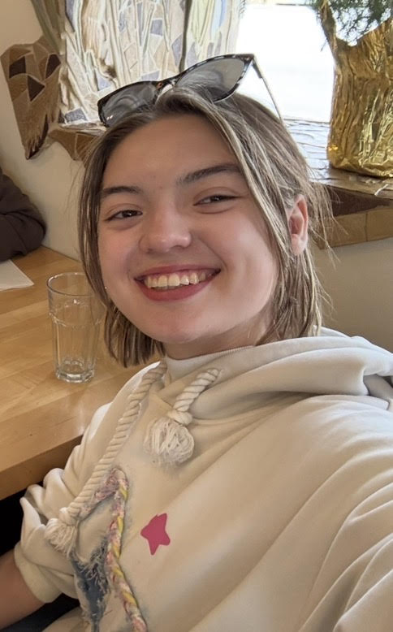

Ava Kohlmeier
Website Representative
“I joined WIC to find a community that shares a passion for computing and to help build my technical skills. I admire the club's dedication to fostering a welcoming community not just for women, but for people from all corners of the tech space! ”